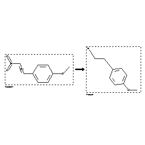

 |
| FA | RX(1); FLST(1); RX(3) |
Reaction (1 of 1)
| Reaction ID | 309104 |
| Reactant BRN | 2047936 |
| Reactant | 4-(trans-2-nitro-vinyl)-anisole |
| Product BRN | 508967 |
| Product | 4-methoxy-phenethylamine |
| No. of Reaction Details | 3 |
Reaction Details (1 of 1)
| Reaction Classification | Preparation |
| Reagent | LiAlH4 |
| Comment | Handbook |
| Citation Pointer | 2057676; Journal; Klemm et al.; JOCEAH; J.Org.Chem.; 23; 1958; 349, 352;1038385; Journal; Clarke; Pinder; JCSOA9; J.Chem.Soc.; 1958; 1967,1973;1268238; Journal; Moed et al.; RTCPA3; Recl.Trav.Chim.Pays-Bas; 74; 1955; 919,922;586682; Journal; Bernstein et al.; JACSAT; J.Amer.Chem.Soc.; 73; 1951; 906, 908; |
Reaction Details (2 of 1)
| Reaction Classification | Preparation |
| Reagent | palladium; sulfuric acid; acetic acid |
| Other Conditions | Hydrogenation |
| Comment | Handbook |
| Citation Pointer | 1149200; Journal; Skita; Keil; CHBEAM; Chem.Ber.; 65; 1932; 429;512392; Journal; Kindler; Brandt; ARPMAS; Arch.Pharm.(Weinheim Ger.); 273; 1935; 478, 482; |
Reaction Details (3 of 1)
| Reaction Classification | Preparation |
| Other Conditions | bei der elektrochemischen Reduktion |
| Comment | Handbook |
| Citation Pointer | 1987091; Journal; Kondo; Shinozaki; YKKZAJ; Yakugaku Zasshi; 49; 1929; 267,268; Chem.Abstr.; 1930; 5294; |
Reference (1 of 7)
| Citation Number | 512392 |
| Document Type | Journal |
| Authors | Kindler; Brandt |
| CODEN | ARPMAS |
| Journal Title | Arch.Pharm.(Weinheim Ger.) |
| (Series) Volume | 273 |
| Publication Year | 1935 |
| Page | 478, 482 |
Reference (2 of 7)
| Citation Number | 586682 |
| Document Type | Journal |
| Authors | Bernstein et al. |
| CODEN | JACSAT |
| Journal Title | J.Amer.Chem.Soc. |
| (Series) Volume | 73 |
| Publication Year | 1951 |
| Page | 906, 908 |
Reference (3 of 7)
| Citation Number | 1038385 |
| Document Type | Journal |
| Authors | Clarke; Pinder |
| CODEN | JCSOA9 |
| Journal Title | J.Chem.Soc. |
| Publication Year | 1958 |
| Page | 1967,1973 |
Reference (4 of 7)
| Citation Number | 1149200 |
| Document Type | Journal |
| Authors | Skita; Keil |
| CODEN | CHBEAM |
| Journal Title | Chem.Ber. |
| (Series) Volume | 65 |
| Publication Year | 1932 |
| Page | 429 |
Reference (5 of 7)
| Citation Number | 1268238 |
| Document Type | Journal |
| Authors | Moed et al. |
| CODEN | RTCPA3 |
| Journal Title | Recl.Trav.Chim.Pays-Bas |
| (Series) Volume | 74 |
| Publication Year | 1955 |
| Page | 919,922 |
Reference (6 of 7)
| Citation Number | 1987091 |
| Document Type | Journal |
| Authors | Kondo; Shinozaki |
| CODEN | YKKZAJ |
| Journal Title | Yakugaku Zasshi |
| Journal/Review Without CODEN | Chem.Abstr. |
| (Series) Volume | 49 |
| Publication Year | 1929; 1930 |
| Page | 267,268; 5294 |
Reference (7 of 7)
| Citation Number | 2057676 |
| Document Type | Journal |
| Authors | Klemm et al. |
| CODEN | JOCEAH |
| Journal Title | J.Org.Chem. |
| (Series) Volume | 23 |
| Publication Year | 1958 |
| Page | 349, 352 |